Welcome to LABolic! とは？
一見地味な金属材料の研究に興味を持ってもらうために、現役の研究者がAIを駆使して作ったブラウザゲームです。インストール不要で、PCでもスマホでも遊べます。
攻略ページを先に見つけた方は、まずはこちらからどうぞ。ゲームをプレイする
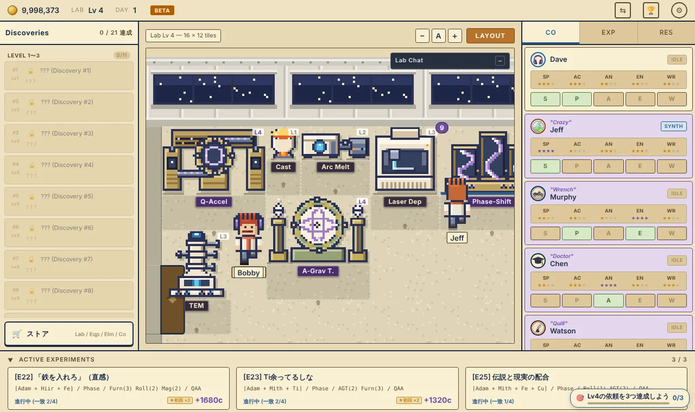
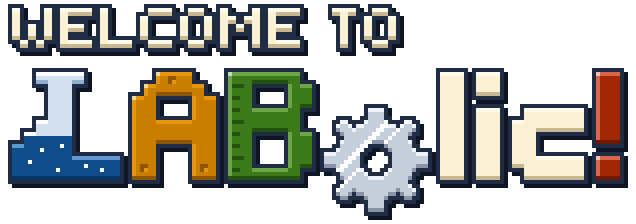
研究室に配属された新人として、試験片を合成・加工・分析し、まだ誰も知らない合金「Discovery」を探すブラウザゲームの攻略ページです。
一見地味な金属材料の研究に興味を持ってもらうために、現役の研究者がAIを駆使して作ったブラウザゲームです。インストール不要で、PCでもスマホでも遊べます。
攻略ページを先に見つけた方は、まずはこちらからどうぞ。ゲームをプレイする

進行状況は自動でセーブされます。セーブデータの保存先はサーバーではなく、遊んでいるブラウザの中です。
バックアップと復元 設定（右上の⚙）の「セーブキー」を使います。
注意iPhone・iPadのSafariでは、しばらくゲームを開かないでいると、サイトのデータが自動で消されることがあります（Safariを使った日数で7日が目安）。ときどきセーブキーをコピーしておくと安心です。
注意セーブキーには、講習の記録、UDMのスキルストア、進行中のUDMも含まれます。含まれないのは設定（効果音や表示など）だけです。ただし、v66以前にコピーしたセーブキーには講習の記録などが入っていないので、引っ越しの前にコピーし直してください。
ホーム画面に追加すると、アプリのように遊べます。
iPhone・iPad（Safari）
Android（Chrome）
注意iPhone・iPadでは、ホーム画面から開いたゲームはSafariとは別にセーブされます。Safariで遊んできた続きをホーム画面版で遊ぶには、先にSafariで「セーブキーをコピー」し、ホーム画面版で「セーブキーを入力」してください（セーブについて）。Androidでは、Chromeとホーム画面版で同じセーブが使われます。
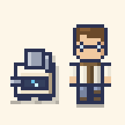
Co-Workerはプレイヤーが作った試験片には触りません。加工・分析するのは、Co-Worker自身が合成した試験片だけです。
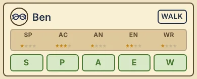
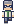
HankAN3 EN3Lab Lv3まではGraceとHankがオススメです。この2人だけでレベル３までの全工程を回せます。
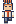
JeffSP4 AC1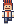
BobbySP4 AC1 EN4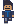
MurphyEN4 AC2相転移合成装置（Lv4）を動かせるSP4はJeff・Bobby・Smithだけなので、レベル４序盤はJeffとBobbyを使うしかありません。2人ともAC1で作業後の故障率が5%と高いので、故障対策にEN4のMurphyが必要です。
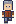
WatsonWR4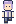
IngridAN4 WR4分析と論文Submitの要になる3人です。
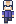
Smith全ステータス4Smithは全ステータスが4なので修理もこなせます。ACが2と低いMurphyは、不要になるかもしれません。
注意Lab Lv4の導入直後は装置の故障が頻発して、資金が尽きて詰みやすくなります。修理費は装置Lv×50c（Lv4の装置で200c）です。コインを貯めておくことをお勧めします。
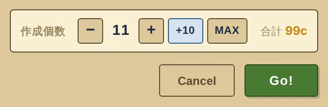
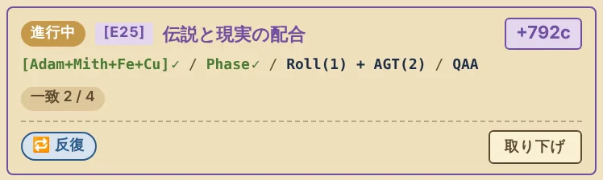
一括処理の重要度は 分析 ≫ 合成 ＞ 加工。講習のハイスコアが高いほど、一括処理で装置が壊れにくくなります（講習スコアと故障率）。
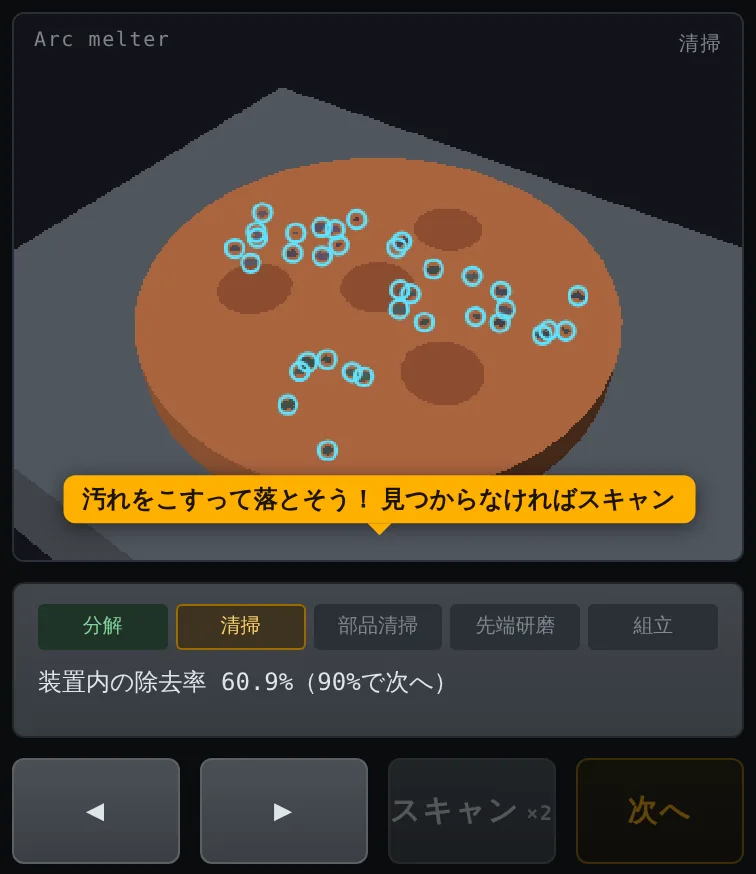
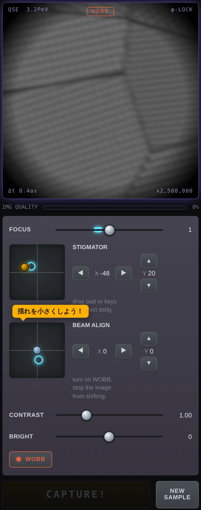
伝説レシピのヒントは、加工の工程ごとに位置で判定され、前後の工程は参照されません。例えば3つの試験片に Furn(1)×4、Furn(2)×4、Furn(3)×4 をかければ、どの位置にFurnaceが入るかから絞り込めます。ヒントが出るのは元素が一致したときなので、元素と合成装置は合わせておきましょう。
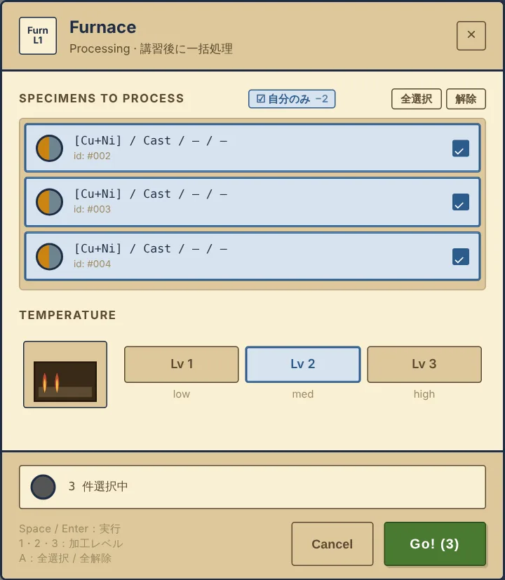
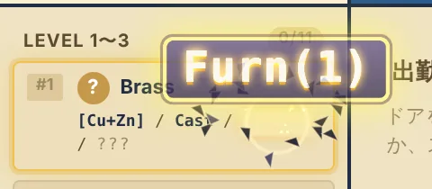
ゲーム本体 v67 のデータから作成しています。
Co-Workerが装置を使えるのは、合成・加工ならSP、分析ならANが装置のLv以上のときです。修理にはENが装置Lv以上必要です。
| 装置 | 種類 | Lv | 必要Lab Lv | 価格 | 作業時間 | 説明 | |
|---|---|---|---|---|---|---|---|
| Casting 鋳造装置 | 合成 | 1 | 1 | 5c 2台目 15c | 12s | 2元素まで合成可能。溶かして固める基本装置。 | |
| Arc Melting アーク溶解炉 | 合成 | 2 | 2 | 20c 2台目 55c | 18s | 2元素、アークの熱で高融点元素もきれいに溶かす | |
| Laser Deposition レーザー造形装置 | 合成 | 3 | 3 | 80c 2台目 200c | 25s | 3元素まで。「レーザー」ってつくとなんかすごそう | |
| Phase-Shift Synth. 相転移合成装置 | 合成 | 4 | 4 | 350c 2台目 900c | 40s | 4元素まで。教授が持ってきた謎のエネルギー体の力で、あらゆる元素を合成する。購入条件: E★4 Co-Worker雇用済み。 | |
| Furnace 電気炉 | 加工 | 1 | 1 | 4c 2台目 10c | 8s | 熱処理。あらゆるプロセッシングの基本。材料も「ととのう」んだな | |
| Rolling Mill 圧延ロール | 加工 | 2 | 2 | 18c 2台目 48c | 12s | 圧延加工。大きなロールで材料をつぶす装置。巻き込み注意！ | |
| Magnetizer 磁化装置 | 加工 | 3 | 3 | 75c 2台目 190c | 18s | 磁性体に磁力を付与する装置。スマホはしまっておいた方がいいかも | |
| Anti-Grav Torsion 反重力ねじり加工 | 加工 | 4 | 4 | 320c 2台目 800c | 25s | 反重力でなんでもねじる。「チャンバーの扉は必ず締めてください。街が消滅します」って言われた | |
| Optical Microscope 光学顕微鏡 | 分析 | 1 | 1 | 3c 2台目 8c | 6s | Lv1分析。組織観察の基本は「みがいてのぞく」 | |
| SEM 走査型電子顕微鏡 | 分析 | 2 | 2 | 15c 2台目 38c | 10s | Lv2分析。電子線で表面を観察する。なんかいろいろ挿さってて、すごそう | |
| TEM 透過型電子顕微鏡 | 分析 | 3 | 3 | 65c 2台目 165c | 15s | Lv3分析。薄膜化した試験片に電子線を透過させる。試験片つくるのまじしんどい | |
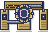 |
Q-Accel Analyzer 量子加速分析装置 | 分析 | 4 | 4 | 300c 2台目 750c | 22s | Lv4分析。黒服の怖い人たちが、「終わったころにまた来ますね」って言って置いていった |
| ？？？ | ？？？ | ？？？ | ？？？ | ？？？ | ？？？ | ？？？ |
講習をクリアしていない装置では一括処理ができません。一括処理での故障率は、その装置の講習のハイスコアで決まり、試験片1個あたり 0.2% ×（100 − スコア）です。一括処理では1個ずつ判定されるので、数が多いほど壊れやすくなります。
クリアすると90〜100点が付きます。下の表の「90点」がクリアライン、「100点」が満点の条件で、そのあいだは直線的に点が上がります。
| 講習 | やること | 測るもの | 100点 | 90点 |
|---|---|---|---|---|
| Casting / Arc Melting / Laser Deposition / Phase-Shift 合成 | 装置を分解して掃除し、組み立てる | 装置全体の汚れの除去率 | 100% | 90% |
| Furnace 加工 | 石英管を回しながら加熱し、封じ切る | 引いたときのくびれの太さ（ゲージの枠内） | 22%（枠の細い端） | 32%（枠の太い端） |
| Rolling Mill 加工 | 2.00 mmの板を1.00 mmに圧延する | 仕上がり板厚の誤差 | ±0.002 mm以内 | ±0.010 mm |
| Magnetizer 加工 | 超伝導マグネットを目標磁場まで励磁する | 目標磁場との誤差 | ±0.05%以内 | ±0.5% |
| Anti-Grav Torsion 加工 | ステージとスフィアの軸を合わせ、Ωまで加速する | ねじり開始時の揺れ（Stage・Sphereの大きい方） | 許容線の1/5以下 | 許容線ちょうど |
| Optical / SEM / Q-Accel 分析 | 像を合わせてCaptureする（Excellent 3回） | Excellent 3回のIMG QUALITYの平均 | 96.5%（上限） | 90% |
| TEM 分析 | 晶帯軸を合わせてCaptureする（Excellent 3回） | Excellent 3回のIMG QUALITYの平均 | 100% | 90% |
Optical・SEM・Q-Accelは、設定が完全に合っていても像に少しボケが残るため、IMG QUALITYの上限は96.5%です（画面では97%と表示）。
| ハイスコア | 1個あたり | 10個の一括処理で故障 | 30個の一括処理で故障 |
|---|---|---|---|
| 90 | 2.0% | 18.3% | 45.5% |
| 92 | 1.6% | 14.9% | 38.4% |
| 94 | 1.2% | 11.4% | 30.4% |
| 95 | 1.0% | 9.6% | 26.0% |
| 96 | 0.80% | 7.7% | 21.4% |
| 98 | 0.40% | 3.9% | 11.3% |
| 99 | 0.20% | 2.0% | 5.8% |
| 100 | 0% | 0% | 0% |
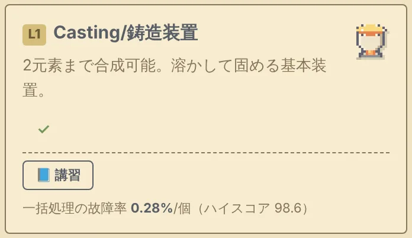
| 名前 | Tier | 雇用Lab Lv | 雇用費 | SP | AC | AN | EN | WR | |
|---|---|---|---|---|---|---|---|---|---|
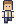 |
Tom | 1 | 1 | 10c | 1 | 2 | 1 | 1 | 1 |
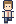 |
Lisa | 1 | 1 | 12c | 2 | 1 | 1 | 1 | 1 |
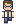 |
Ben | 1 | 1 | 20c | 1 | 3 | 1 | 2 | 1 |
| Anna | 1 | 1 | 25c | 2 | 2 | 2 | 1 | 2 | |
| Mike | 1 | 1 | 15c | 2 | 1 | 1 | 2 | 1 | |
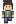 |
Owen | 1 | 1 | 18c | 1 | 1 | 2 | 2 | 2 |
| Pam | 1 | 1 | 22c | 2 | 2 | 1 | 1 | 2 | |
| Kate | 2 | 2 | 90c | 2 | 3 | 3 | 1 | 2 | |
| Sam | 2 | 2 | 80c | 3 | 2 | 1 | 3 | 1 | |
| Carol | 2 | 2 | 75c | 1 | 3 | 2 | 1 | 3 | |
| Dave | 2 | 2 | 130c | 3 | 3 | 2 | 2 | 2 | |
| Eve | 2 | 2 | 70c | 2 | 1 | 3 | 1 | 2 | |
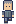 |
Frank | 2 | 2 | 85c | 1 | 2 | 2 | 3 | 2 |
| Grace | 2 | 2 | 100c | 3 | 3 | 1 | 1 | 3 | |
| Hank | 2 | 2 | 110c | 2 | 2 | 3 | 3 | 1 | |
| Iris | 2 | 2 | 85c | 1 | 3 | 2 | 2 | 2 | |
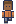 |
Joe | 2 | 2 | 80c | 3 | 2 | 2 | 2 | 1 |
| Jeff "Crazy" | 3 | 3 | 350c | 4 | 1 | 3 | 3 | 2 | |
| Murphy "Wrench" | 3 | 3 | 280c | 2 | 2 | 1 | 4 | 2 | |
| Chen "Doctor" | 3 | 3 | 450c | 2 | 3 | 4 | 2 | 3 | |
| Lee "Ghost" | 3 | 3 | 380c | 1 | 4 | 3 | 2 | 3 | |
| Watson "Quill" | 3 | 3 | 320c | 2 | 3 | 2 | 1 | 4 | |
| Bobby "Reckless" | 3 | 4 | 1,000c | 4 | 1 | 1 | 4 | 1 | |
| Ingrid "Polymath" | 3 | 4 | 1,500c | 3 | 3 | 4 | 3 | 4 | |
| Smith "Professor" | 3 | 4 | 2,500c | 4 | 4 | 4 | 4 | 4 |
本編の攻略にかかわる重要な情報です！クリア前の方は閲覧しないことを推奨します。
| No. | 名前 | 元素 | 合成 | 加工 | 分析 |
|---|---|---|---|---|---|
| #1 | Brass 実在合金 |
Cu + Zn | Cast | Furn(1) | OM |
| #2 | Cupronickel 実在合金 |
Cu + Ni | Arc | Furn(2) + Roll(1) | OM |
| #3 | Monel 実在合金 |
Cu + Ni | Arc | Furn(2) + Roll(2) | SEM |
| #4 | Invar 実在合金 |
Fe + Ni | Arc | Furn(2) | SEM |
| #5 | Permalloy 実在合金 |
Fe + Ni | Arc | Furn(3) + Mag(2) | SEM |
| #6 | Nichrome 実在合金 |
Ni + Cr | Arc | Roll(1) | SEM |
| #7 | Ferritic Stainless 実在合金 |
Fe + Cr | Arc | Furn(2) + Roll(2) + Mag(1) | SEM |
| #8 | Austenitic Stainless 実在合金 |
Fe + Cr + Ni | Laser | Furn(3) + Roll(2) | SEM |
| #9 | Ti-Cr β-Alloy 実在合金 |
Ti + Cr | Arc | Furn(2) | SEM |
| #10 | Nitinol 実在合金 |
Ni + Ti | Arc | Furn(3) | TEM |
| #11 | Inconel-like superalloy 実在合金 |
Ni + Cr + Fe | Laser | Furn(3) + Roll(2) | TEM |
| #12 | AETHERITE-α Lv4 Tier 1 |
Adamantite + Mithril | Phase | Furn(2) + Roll(2) | QAA |
| #13 | NULLSTEEL-β Lv4 Tier 1 |
Adamantite + Orichalcum | Phase | Furn(1) + Roll(1) | QAA |
| #14 | PYREMITE-γ Lv4 Tier 1 |
Mithril + Hihiirokane | Phase | Furn(3) + Mag(3) | QAA |
| #15 | PARADOX-δ Lv4 Tier 1 |
Orichalcum + Hihiirokane | Phase | Furn(2) | QAA |
| #16 | Project: AETHER Lv4 Tier 2 |
Mithril + Orichalcum + Zn | Phase | Furn(1) | QAA |
| #17 | XENOLITH-7 Lv4 Tier 2 |
Adamantite + Hihiirokane + Fe | Phase | Furn(3) + Roll(3) + Mag(2) | QAA |
| #18 | CHRONOS-IX Lv4 Tier 2 |
Adamantite + Mithril + Ti | Phase | AGT(2) + Furn(2) | QAA |
| #19 | Azoth Lv4 Tier 3（順序固定） |
Adamantite + Mithril + Fe + Ni | Phase | Furn(3) → Roll(3) → Mag(3) → Furn(1) | QAA |
| #20 | Quintessence Lv4 Tier 3（順序固定） |
Mithril + Orichalcum + Ti + Cu | Phase | AGT(3) → Furn(1) → Mag(2) → Roll(2) | QAA |
| #21 | Lapis Philosophorum Lv4 Tier 3（順序固定） |
Adamantite + Hihiirokane + Cr + Zn | Phase | Furn(1) → Mag(3) → Furn(3) → AGT(3) | QAA |
加工の「+」は順不同、「→」は順序固定。分析は記載の装置以上のLvで分析すれば一致します。
本編クリア後に解放される、ローグライト風のエンドレスモードです。時間とともに増える変異（Variant）のリストを消化してスキルを獲得し、ハイスコアを目指しましょう。
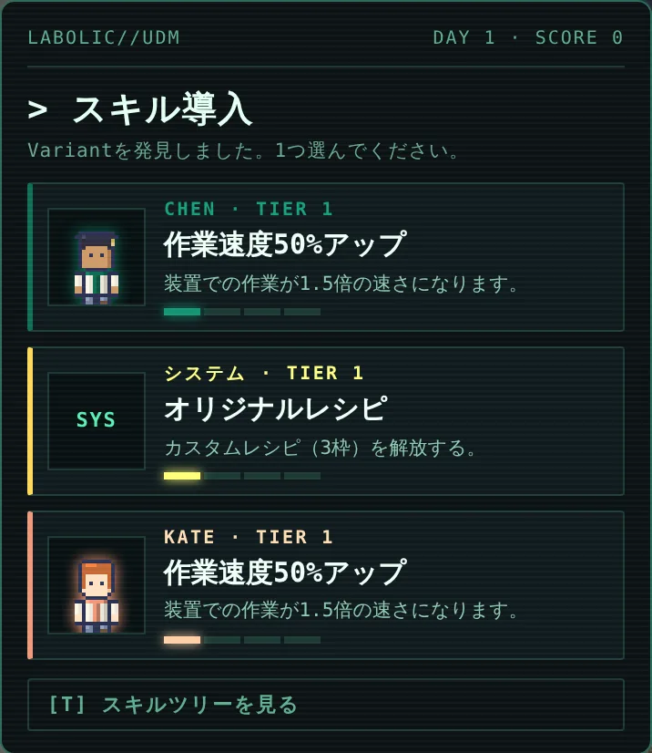
スキルはCo-Workerごとに段階1〜4の4段階で、順番に取得します。各ランの最初の1つ（初回ブースト）だけは、段階4のユニークスキルから選べます。UDMで稼いだポイント（pt）では、次回以降のUDMで有効な恒常強化としてスキルを購入できます（購入はUDMを終えてから、設定の「UDMスキルストア」で）。
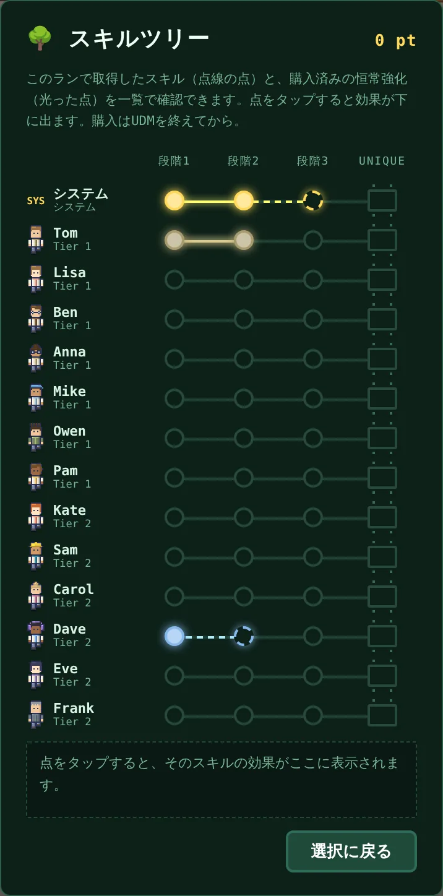
| 段階 | 効果 | 価格（pt） |
|---|---|---|
| 1 | 作業速度50%アップ 装置での作業が1.5倍の速さになる | 300 |
| 2 | 移動速度30%アップ ラボ内の移動が1.3倍の速さになる | 800 |
| 3 | ステータス＋1 どのステータスが上がるかはCo-Workerごとに異なる（下表） | 2,000 |
| 段階 | スキル | 効果 | 価格（pt） |
|---|---|---|---|
| 1 | オリジナルレシピ | カスタムレシピ（3枠）を解放する。 | 1,500 |
| 2 | マルチタスク | Active Experiments の受注枠 +1。 | 4,000 |
| 3 | 役割分担 | Co-Workerごとに、担当するActive Experimentを指定できる。 | 8,000 |
| 4 | LABの司令塔 | カスタムレシピに、条件を指定しないバッチ指定を追加する。Fur / Roll / Mag / AGT だけを指定し、レベルは3段階のいずれかをランダムに対象とする。 | 15,000 |
| 名前 | 段階3 | ユニークスキル（段階4） | 価格（pt） | |
|---|---|---|---|---|
| Tom Tier 1 | ACステータス＋１ AC 2 → 3 |
一緒にやろう 出勤できるCo-Workerの上限 +2。 | 4,000 | |
| Lisa Tier 1 | ACステータス＋１ AC 1 → 2 |
ひらめき 順序固定のVariantで、順序以外がすべて一致したとき、その場で全条件が判明する。発見にはならない。 | 4,000 | |
| Ben Tier 1 | ACステータス＋１ AC 3 → 4 |
僕だけの装置 Smithが出勤しているとき、MPSSで元素未発見のうち最も報酬の高いVariantの元素が判明する（Smithのスキル段階は問わない）。クールタイム2DAY。Leeが出勤しているとクールタイムが1DAYになる。 | 4,000 | |
| Anna Tier 1 | SPステータス＋１ SP 2 → 3 |
手順書、作りました 出勤中のすべてのCo-Workerの作業速度 +50%。 | 4,000 | |
| Mike Tier 1 | SPステータス＋１ SP 2 → 3 |
整理整頓 出勤中のすべてのCo-Workerの移動速度 +30%。 | 4,000 | |
| Owen Tier 1 | ANステータス＋１ AN 2 → 3 |
計画性 ストックできるVariantの上限 +5。 | 4,000 | |
| Pam Tier 1 | WRステータス＋１ WR 2 → 3 |
インフルエンサー 獲得するVariantのポイント +10%。 | 4,000 | |
| Kate Tier 2 | SPステータス＋１ SP 2 → 3 |
顕微鏡講習 出勤中のすべてのCo-WorkerのAN +2。 | 7,000 | |
| Sam Tier 2 | ACステータス＋１ AC 2 → 3 |
熱処理の極意 Furnace以外の加工を行わない代わりに、バッチ指定されたFurnace処理を3条件まとめて行う。Furnaceに必要なSPを自動的に満たす。 | 7,000 | |
| Carol Tier 2 | ACステータス＋１ AC 3 → 4 |
月イチの勉強会 出勤中のすべてのCo-WorkerのWR +2。 | 7,000 | |
| Dave Tier 2 | ACステータス＋１ AC 3 → 4 |
同期の絆 DaveとGraceのSPが4になる。元素未発見のVariantからランダムに1つ選んでその元素が判明する。クールタイム2DAY。Graceが出勤しているとクールタイムが1DAYになる。 | 7,000 | |
| Eve Tier 2 | ACステータス＋１ AC 1 → 2 |
磁化の極意 Magnetization以外の加工を行わない代わりに、バッチ指定されたMag処理を3条件まとめて行う。Magnetizerに必要なSPを自動的に満たす。 | 7,000 | |
| Frank Tier 2 | ANステータス＋１ AN 2 → 3 |
優先順位を決めよう 1DAYに1回、ストック中のVariantを1つ破棄できる。スコアは入らない。 | 7,000 | |
| Grace Tier 2 | WRステータス＋１ WR 3 → 4 |
同期の絆 DaveとGraceが一度に、同じ元素の試験片を3つ合成する。元素の費用も3倍かかる。Daveの「同期の絆」のクールタイムが50%短くなる。 | 7,000 | |
| Hank Tier 2 | ANステータス＋１ AN 3 → 4 |
気づきメモ 部分一致の手がかりが、1項目の一致でも得られるようになる。 | 7,000 | |
| Iris Tier 2 | ACステータス＋１ AC 3 → 4 |
反重力の極意 AGT以外の加工を行わない代わりに、バッチ指定されたAGT処理を3条件まとめて行う。SPが4になる。 | 7,000 | |
| Joe Tier 2 | ACステータス＋１ AC 2 → 3 |
圧延の極意 Rolling以外の加工を行わない代わりに、バッチ指定されたRoll処理を3条件まとめて行う。Rolling Millに必要なSPを自動的に満たす。 | 7,000 | |
| Jeff Tier 3 | ANステータス＋１ AN 3 → 4 |
失敗は成功の母 JeffとBobbyが両方出勤しているときのみ有効。Co-Workerのドリフト回数が表示され、100回に達すると未発見で最も報酬の高いVariantのレシピがすべて判明してカウントが戻る。出勤中のすべてのCo-WorkerのAC −2。「LABの司令塔」を無効化する。 | 10,000 | |
| Murphy Tier 3 | SPステータス＋１ SP 2 → 3 |
実験室の番人 出勤中のすべてのCo-WorkerのEN +2。 | 10,000 | |
| Chen Tier 3 | WRステータス＋１ WR 3 → 4 |
分析の極意 一括生成された試験片の分析を3試料まとめて行う。 | 10,000 | |
| Lee Tier 3 | ANステータス＋１ AN 3 → 4 |
丁寧にいこう 出勤中のすべてのCo-WorkerのAC +2。Benの「僕だけの装置」のクールタイムが50%短くなる。 | 10,000 | |
| Watson Tier 3 | ACステータス＋１ AC 3 → 4 |
Reviewer 2 キラー Submitで得られるコインが2倍になる。Variantのスコアには影響しない。 | 10,000 | |
| Bobby Tier 3 | ANステータス＋１ AN 1 → 2 |
失敗は成功の母 Jeffと対になるスキル。両名が出勤していないと発動しない。 | 10,000 | |
| Ingrid Tier 3 | SPステータス＋１ SP 3 → 4 |
…分身してない？ Ingridが分析した試験片は、そのまま同時にSubmitされる。 | 10,000 | |
| Smith Tier 3 | Submit報酬コイン10%アップ Smithの出勤中のみ有効。 |
進捗報告 Smithにカスタムレシピが割り当てられているとき、類似する元素発見済みVariantの進捗に合わせてレシピを自動で更新していく。Smithの出勤中は「LABの司令塔」が無効化される。 | 10,000 |
Benのユニークスキル「僕だけの装置」で元素を見つけ、Smith教授のユニークスキル「進捗報告」でプロセスを探索するのが軸のビルドです。Benの元素発見はSmithの出勤が条件で、Leeがいるとクールタイムが半分になります。
Smith教授の「進捗報告」は、カスタムレシピのSubmitによってレシピを更新していくので、他のCo-Workerには高い精度と回転率の両立が求められます。他メンバーのステータスを底上げするKate（全員のAN +2）とCarol（全員のWR +2）、手がかりの一致条件を下げるHank（1項目の一致でも手がかりが出る）が有効です。
プレイヤーの主な役割は、教授とは別にカスタムレシピを立てて、スコアの低い解明済みレシピを消化したり、Frankのスキルで取捨選択したりすることです。
Smithの出勤中は「LABの司令塔」が無効になります。
プレイヤーが「LABの司令塔」として条件探索を主導するビルドです。
Daveの「同期の絆」は、元素未発見のVariantを1つ選んでその元素を明かします（2DAYに1回、Grace出勤中は1DAYに1回）。Jeffの「失敗は成功の母」とSmithの出勤中は「LABの司令塔」が無効になるので、組み合わせに注意。
JeffとBobbyが両方出勤していると、Co-Workerの作業ミス（ドリフト）が数えられ、100回に達すると未発見で最も報酬の高いVariantのレシピがすべて判明します。見つかったVariantは、自分で作製して提出しましょう。
とにかくスピードを上げる必要があります。また、故障が頻発するので、全員のENを底上げできるMurphy（全員のEN +2）と、収入を補えるWatson（Submitのコイン2倍）が有効です。
出勤中の全Co-WorkerのACが2下がり、「LABの司令塔」も無効になります。